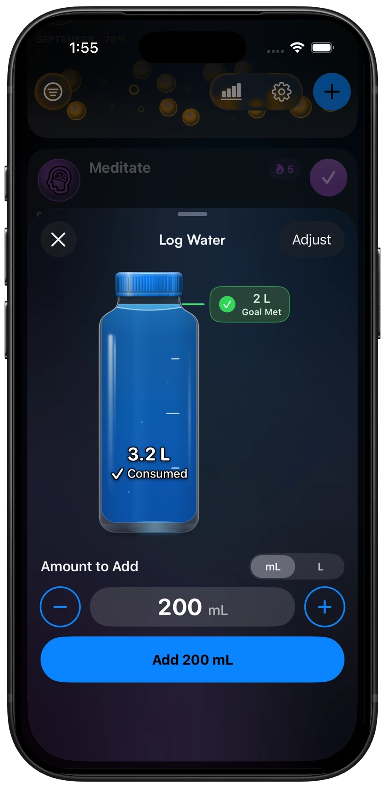
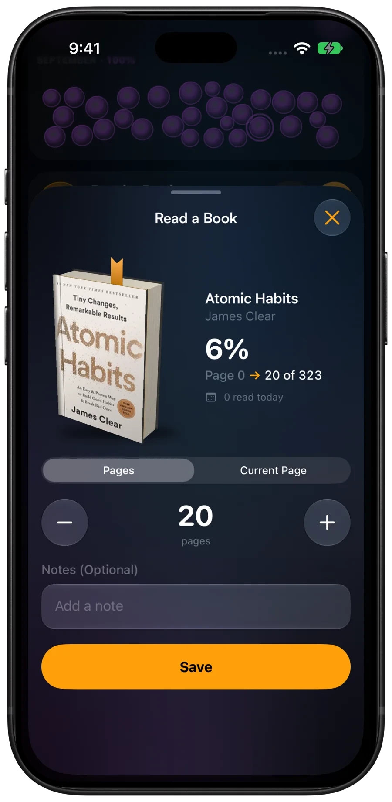
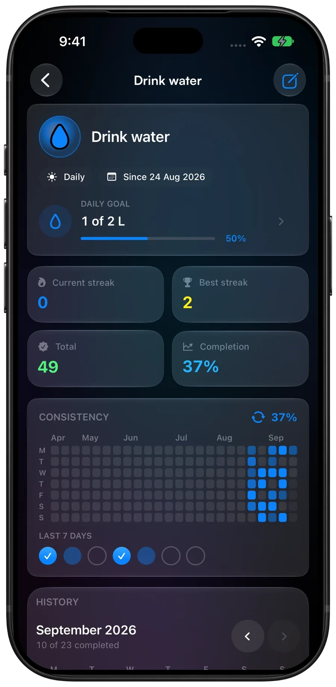
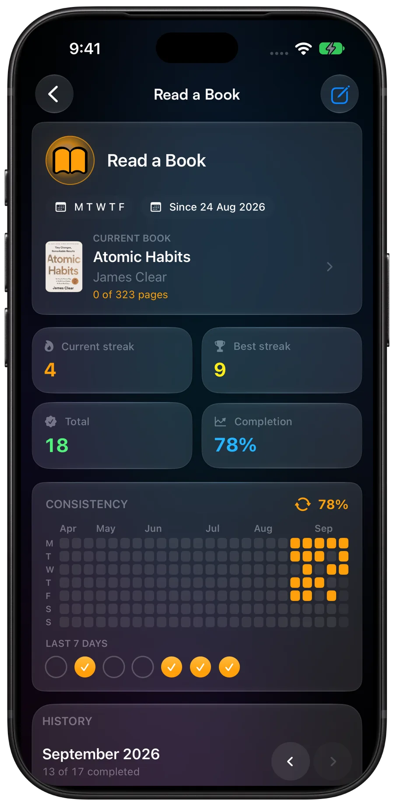
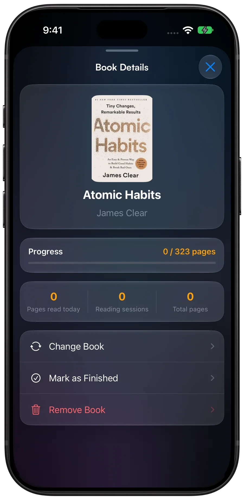
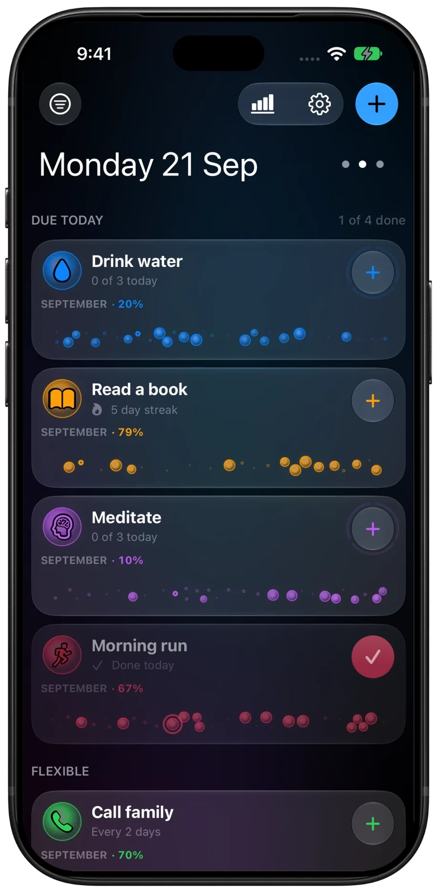
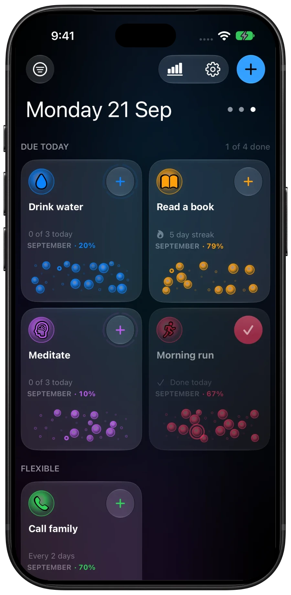

Free for everyone
A clearer way to keep going.
Make Home yours. Log every drink and every page.
UI Changes
- Choose Cards, Bubble rows, or Mini constellations for Home.
- Preview layouts in Settings, then switch with dots or a swipe.
- Choose an app accent color with presets or a custom color picker, then keep or tint the original background separately.
- Keep Home screen icons neutral or have them follow the selected accent.
- Home layout dots follow the selected app accent.
New Features
- Personalize habits and custom categories with full-color emoji or SF Symbols.
- Attach books to Read a Book, log pages, and keep finished books in history.
- See your book in 3D while logging, with a bookmark that moves to the next page.
- Track water against a daily goal with a live bottle and quick amount controls.
- Reach your water goal and the bottle celebrates with a shimmer and a Goal Met check.








